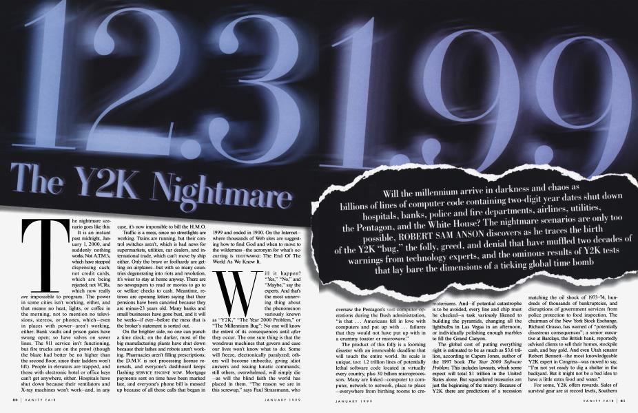

Y2K efers to potential computer errors related to the formatting and storage of calendar data for dates in and after the year 2000. Many programs represented four-digit years with only the final two digits, making the year 2000 indistinguishable from 1900. Computer systems' inability to distinguish dates correctly had the potential to bring down worldwide infrastructures for industries ranging from banking to air travel.As the year 2000 approached, computer programmers realized that computers might not interpret 00 as 2000, but as 1900. Activities that were programmed on a daily or yearly basis would be damaged or flawed. As December 31, 1999, turned into January 1, 2000, computers might interpret December 31, 1999, turning into January 1, 1900.As the first day of January 2000 dawned and it became apparent that computerized systems were intact, reports of relief filled the news media. These were followed by accusations that the likely incidence of failure had been greatly exaggerated from the beginning. Those who had worked in Y2K-compliance efforts insisted that the threat had been real.